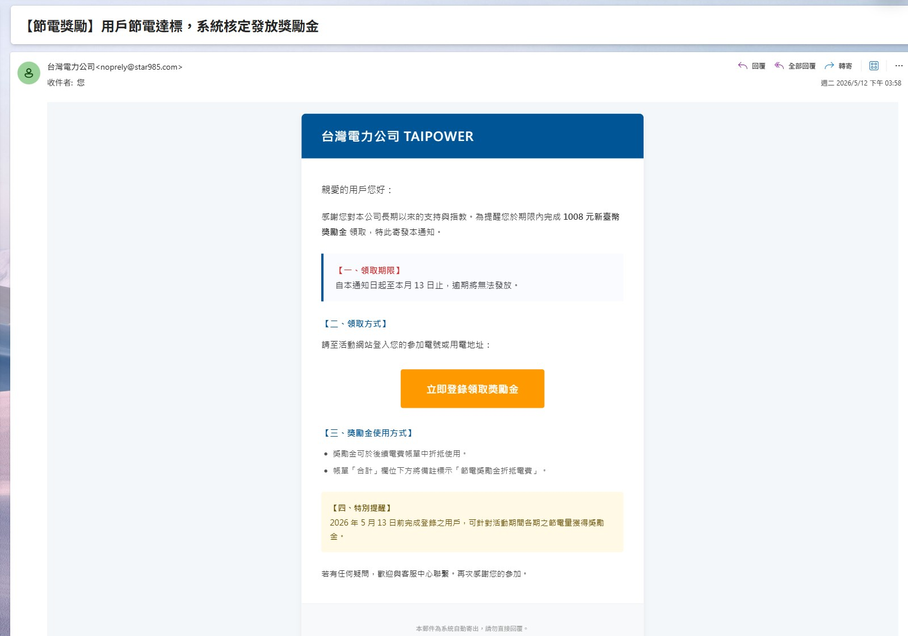

身為一個在電腦前研究了幾十年的老手，我常年跟各種數據、結構打交道。在工程放樣上，一公釐的錯就會導致結構崩塌；在數位世界裡，演算法與代碼的邏輯同樣不容許任何低級錯誤。今天一早，我的雷達就攔截到了一封偽造「台灣電力公司 (TAIPOWER)」的標準釣魚郵件。
對於很多在台灣工作的外籍白領或一般民眾來說，收到這種攸關民生公用事業的「獎勵金」或「帳單催繳」通知，往往容易因為慌張而失去防備。這篇文章的目的，就是要用專業的電子郵件鑑識與代碼安全視角，扒光這個詐騙集團的底底。我們不需要等警察來抓，一眼就能判定它是騙局，原因有以下三個致命漏洞：
在任何安全的行政自動化流程中，時間戳記（Time Stamp）的邏輯必須保持絕對的一致性。我們來看看這封詐騙信件留下的硬傷：
「領取期限：自本通知日起至本月 13 日止... 特別提醒：2026 年 5 月 13 日前完成登錄之用戶，可獲得獎勵金。」

▲ 數位診斷對照現象：請仔細觀察上圖黃色區塊中的「2026 年 5 月 13 日前完成登錄」限制。
這個漏洞最為諷刺：這封信被我攔截並進行技術分析的時間是 2026 年 5 月 16 日。詐騙集團的群發機器人在腳本配置上出現了嚴重的邏輯失誤，他們拿著一個「三天前就已經過期」的範本盲目群發。當一個系統試圖用「過去的時間」來威脅用戶或利誘用戶時，這在資安領域就是自動化惡意腳本最典型的數位指紋。
網路釣魚（Phishing）高度依賴社交工程手法，也就是利用人性的心理弱點。這封信拋出了 「1,008 元新臺幣獎勵金」 作為誘餌，試圖引導用戶點擊「立即登錄領取」的惡意連結。
然而，從台電的實際業務架構與後台邏輯來看，合法的「節電獎勵金」政策根本不需要用戶點擊外部連結去輸入個資匯款。台電的節電獎勵是採取「登錄電號後，由系統比對去年同期的實際節電量，並自動在下一期官方帳單中直接折抵電費」。任何宣稱可以「直接線上領取現金、退款」並要求跳轉到外部網頁的，百分之百是釣魚手段。
如果缺乏防備的用戶點擊了這個超連結，您的瀏覽器絕對不會被引導到政府或公用事業的加密網域（也就是網址結尾為 `.gov.tw` 或 `taipower.com.tw` 的合法網站）。相反地，您會被劫持到一個精心偽造的假台電網頁。
這個前端介面會做得跟真的一樣，但其後端代碼的核心目的只有一個——「憑證與個資收割（Credential Harvesting）」：
一旦您將這些數據輸入，它會瞬間外流至境外的黑客伺服器，並立刻在後台被用於盜刷、綁定 Apple Pay 進行海外消費，造成不可逆的財務損失。
在點擊任何公用事業的通知前，請強制執行以下兩項自我防禦協定：
A. 檢查寄件者網域： 真正來自台電的電子郵件，其發信伺服器必須通過 SPF（寄件者原則架構）與 DKIM 驗證，網址後綴必然是 `@taipower.com.tw`。如果看到一串奇怪的英數雜湊或私人網域，直接刪除。
B. 對超連結保持「零信任」： 在電腦上將滑鼠懸停在按鈕上（不要點擊），或在手機上長按連結，查看它即將跳轉的真實網址（URL）。只要不是引導至台電官方加密網域，立刻關閉視窗。
[English Translation for the Expat and Foreign Professional Community in Taiwan]
As a seasoned computer professional who has spent decades analyzing digital infrastructures, I frequently observe malicious actors attempting to exploit psychological vulnerabilities. Today, a textbook example of an "Email Phishing Scam" impersonating Taiwan Power Company (TAIPOWER) was sent straight to my radar.
While many foreigners working in Taiwan might panic upon seeing a formal notice regarding utility rewards or bills, a closer look at the technical and logical architecture reveals that this email is an absolute failure. Here is a professional forensic breakdown of why we can identify this scam instantly.
In any secure administrative workflow, time stamps must maintain logical consistency. Let's look at the hard evidence in this phishing text:
"Claim Deadline: From the date of this notice until the 13th of this month... Special Reminder: Users who complete registration before May 13, 2026, can obtain rewards..."
The fatal flaw? This email was intercepted and analyzed on May 16, 2026. The scammer’s automated script mistakenly blasted out a template with a deadline that had already expired three days prior. When a system threatens severe consequences (expiry of funds) based on a past date, it exposes a poorly configured chronological loop—a definitive signature of automated cybercrime mass-mailing.
Phishing relies heavily on social engineering, specifically the bait of immediate financial gain. The email lures users with a "NT$1,008 Reward Incentive."
Topics from a structural and operational perspective, TAIPOWER’s legitimate Power-Saving Incentive program never operates via direct cash-out registrations through external links. Authentic credits are accumulated based on actual year-on-year electricity reduction data and are automatically deducted from your subsequent official billing statements. Any prompt demanding you to click an external hyperlink to "log in and claim immediate cash" is a malicious redirection mechanism designed for credential harvesting.
If an unsuspecting user executes the hyperlink, they are not directed to the secure governmental or corporate domain (`.gov.tw` or `taipower.com.tw`). Instead, they are routed through a spoofed proxy or a compromised look-alike domain.
The layout will mimic a legitimate interface, but the backend is designed to capture:
Once inputted, these data points are instantly exfiltrated to offshore servers for unauthorized credit card binding (e.g., Apple Pay exploitation) or financial drain.
Before executing any action on a utility notification, implement these two verification protocols:
A. Inspect the Sender Domain (The Header): Legitimate corporate communications from Taipower will strictly originate from verified cryptographic domains terminating in `@taipower.com.tw`. If the sender address contains random alphanumeric strings or external domains, it has failed the basic SPF (Sender Policy Framework) check.
B. Zero Trust on Hyperlinks: Hover over the "Login" button without clicking it to inspect the destination URL. If it does not route to the official cryptographic HTTPS domain of Taiwan Power Company, abort the session immediately.